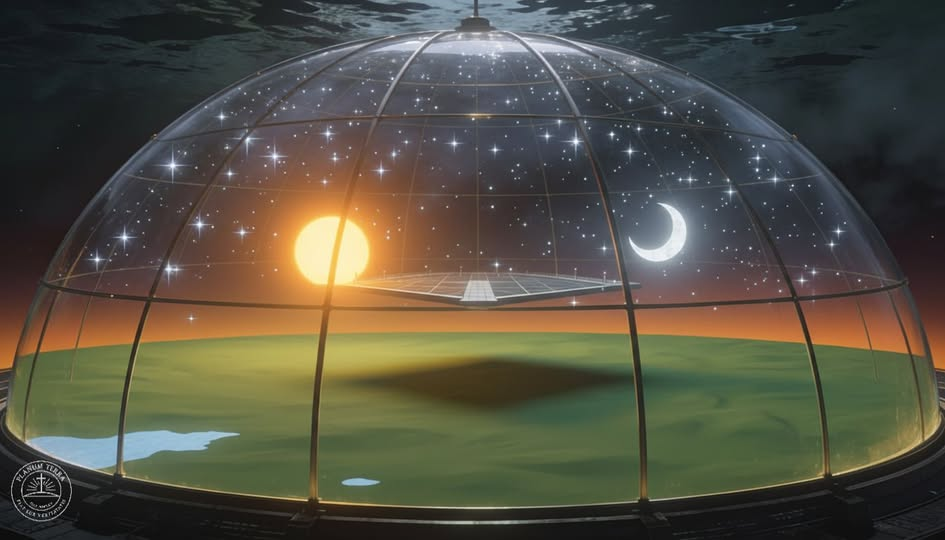

A firmament titka.
Lehetséges, hogy az égbolt valójában egy hatalmas, láthatatlan kupola, amely elválaszt minket az ismeretlentől? Hányszor néztél már fel az égre, és érezted, hogy ott fent valami több van, mint végtelen üresség és hideg vákuum?A régi idők emberei ezt a titkot még ismerték.
A „firmament” – más néven az ég boltozata – nem puszta költői kifejezés, hanem egy konkrét, teremtett szerkezet, amely a vizeket választja el a vizektől. A Biblia több helyen is említi: Isten megalkotta az ég boltozatát, és elválasztotta a felső és alsó vizeket. Ez nem csupán hitbeli jel, hanem egy ősi kozmológiai leírás, amit minden nagy civilizáció ismert.Gondoljunk csak bele: a babiloniak, az egyiptomiak és a zsidók mind kupola alakban ábrázolták az eget. Vajon véletlen, hogy egymástól függetlenül, kontinenseken átívelve ugyanazt a képet látták?
Miért hitt minden kultúra abban, hogy az ég egy szilárd „mennyei fedél”?Amikor ma rakétákat indítanak, miért láthatjuk azt, hogy a legtöbbjük nem egyenesen felfelé halad, hanem ívelt pályán „elfordul”, majd egyszerűen eltűnik a horizonton? Vajon tényleg eljutnak a „világűrbe”, vagy csak a kupola határáig? És miért állítják le az indításokat gyakran „rejtélyes” műszaki hibákra vagy „biztonsági” okokra hivatkozva bizonyos magasságok után?A Nap és a csillagok mozgása is különös. Minden nap ugyanazon pályákon haladnak, és a csillagképek évezredek óta változatlanok maradtak. Ha valóban egy irdatlan méretű, mozgásban lévő, keringő bolygón élnénk, nem kellene ennek változnia? Miért tűnnek a csillagok inkább fénylő pontoknak a vízen, semmint hatalmas napoknak milliárd fényévekre innen?A természetes fénytörés is árulkodó.
A horizonton „emelkedő” Nap és Hold gyakran torz formában jelenik meg, mintha egy üvegkupolán keresztül néznénk őket. A légkör viselkedése, a nyomáskülönbségek, sőt még az egyszerű gázkísérletek is azt mutatják: vákuum alatt nem létezhet stabil levegőréteg. Akkor mégis hogyan maradhatna ott az „űr” a Föld felett?Miért nincs egyetlen valóban hiteles, nem számítógépesített fotó sem a Földről az űrből? Miért kell mindent CGI-vel pótolni, ha valóban létezik a felvételek eredeti verziója?És miért repülhetnek a repülőgépek olyan irányban, amit egy gömbfelszínen egyszerűen nem tudnának tartani? Miért használják a pilóták a „horizontot” referencia gyanánt, ha az folyamatosan változna a Föld görbülete szerint?
Ezek a kérdések nem bizonyítják önmagukban a kupola létét – de kétségkívül elgondolkodtatnak. A „firmament” nem vallási mese, hanem egy lehetséges magyarázat arra, miért érezzük, hogy a világunk határokkal bír, és hogy a fent és a lent valóban el vannak választva egymástól.
Talán amit kupolának hívunk, az a teremtés legnagyobb titka: a védelem, amely otthonossá teszi a világunkat. Lehet, hogy az „égbolt” maga az élő bizonyíték arra, hogy nem sodródó porszemek vagyunk a végtelenben, hanem egy gondosan megalkotott világ lakói.A kupola nem börtön, hanem rend. A teremtett világ kerete, amely megmutatja, hogy van értelme, célja és határa mindennek.
Csak fel kell néznünk... és végre észrevennünk.